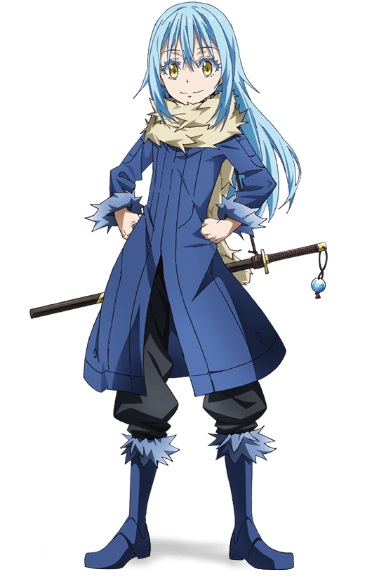

Rimuru Tempest
Rimuru is the main protagonist of That Time I Got Reincarnated as a Slime
He is the founder and King of the monster country Tempest of the Jura Forest. He possesses the Unique Skill Predator, which allows him to mimic the appearance of any item or creature he has devoured.

The Reasons Why I like Rimuru Tempest:
He is very hardworking with a positive attitude
He has a generous heart. He will not hesitate to assist his buddies and clans when they are in danger.
He has the ability to think independently and make meticulous preparations. Frequently, he will quickly turn a situation to his favor, with unexpected results.